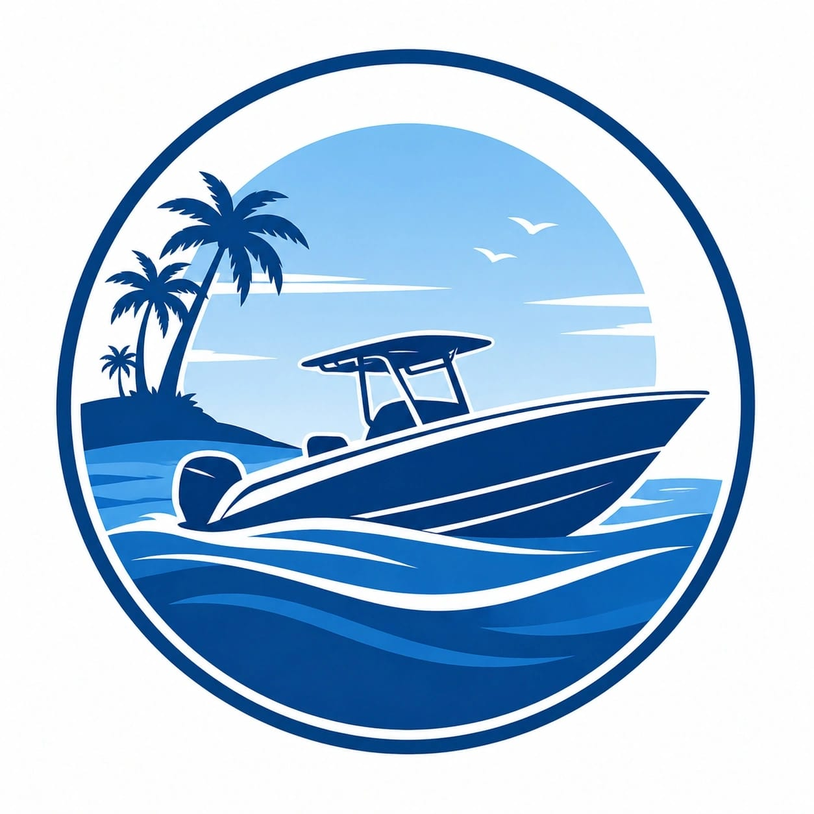

Izabal Go!
Somos la ventana al paraíso verde de Guatemala.
Izabal Go! nació del amor profundo por uno de los departamentos más ricos, diversos y sorprendentes de toda Guatemala. Somos una plataforma de turismo digital dedicada exclusivamente a mostrar, celebrar y promover todo lo que el departamento de Izabal tiene para ofrecer al mundo.
Desde las cálidas aguas del Lago de Izabal —el más grande del país— hasta las selvas tropicales de Río Dulce, los paísajes de Playa Blanca y las pozas naturales de aguas termales de Finca El Paraíso en Izabal, cada rincón cuenta una historia.
¿Qué nos mueve?
Explorar
Llevamos a viajeros a descubrir rincones ocultos que no aparecen en ninguna guía convencional: cascadas secretas, aldeas remotas y rutas vírgenes.
Conectar
Creemos en el turismo que une personas. Conectamos viajeros con comunidades locales, guías nativos y emprendedores que viven y aman esta tierra.
Conservar
Promovemos el turismo responsable y sostenible, conscientes de que la naturaleza extraordinaria de Izabal es un patrimonio que debemos proteger.
Nuestra historia
Un departamento que
Merece ser conocido
Izabal es, sin duda, el secreto mejor guardado de Guatemala. A pesar de concentrar una biodiversidad extraordinaria, paisajes de postal y una cultura vibrante, durante muchos años fue destino únicamente de viajeros aventureros que sabían buscarlo. Izabal Go! nació precisamente para cambiar eso.
Nuestro equipo está formado por lugareños apasionados, guías con décadas de experiencia, fotógrafos que han recorrido cada kilómetro de selva y costa, y emprendedores comprometidos con el desarrollo local. Todos compartimos una misma convicción: Izabal merece estar en el mapa del turismo mundial.
A través de nuestra plataforma encontrarás información detallada, recomendaciones de lugares para visitar, guías para explorar el Parque Nacional Río Dulce, las pozas de Aguas termales, las playas de Punta de manabique, los paísajes de Sendero las Escobas y mucho más.
Cada contenido que publicamos está verificado, vivido y contado con honestidad. No vendemos fantasías: vendemos experiencias reales en uno de los rincones más genuinos de Centroamérica.
"Izabal no es solo un destino. Es una experiencia que transforma."
— El equipo de Izabal Go!
Explorar Izabal!